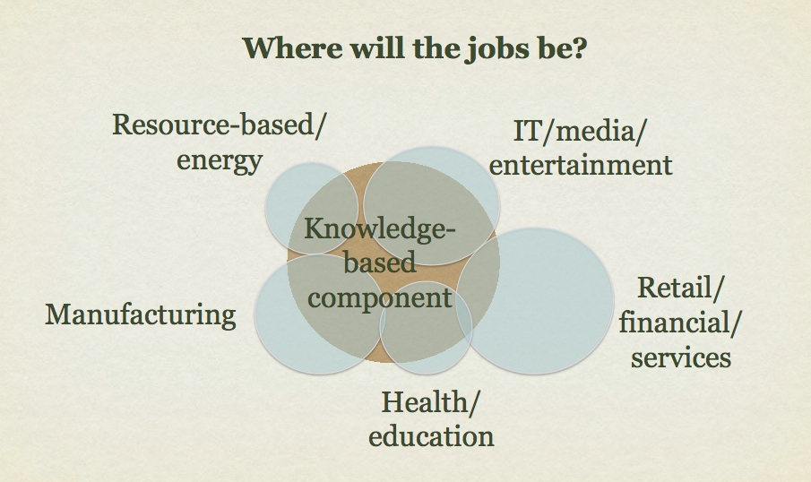
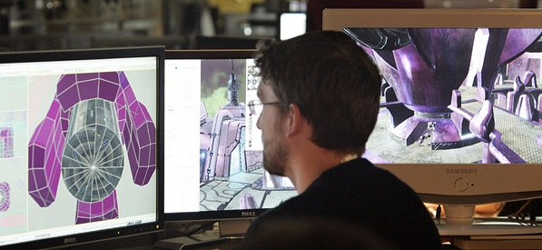
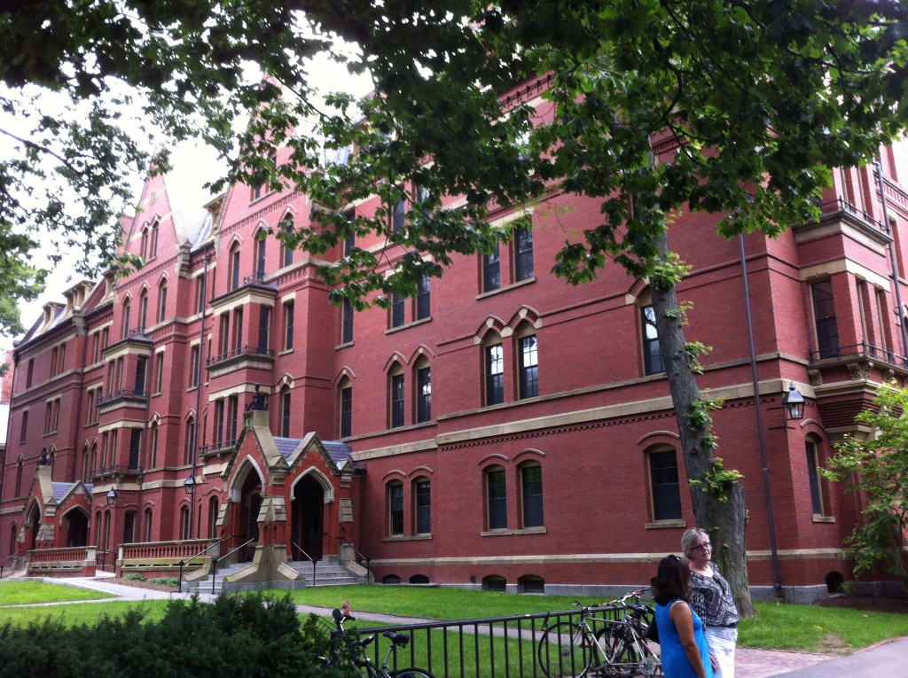
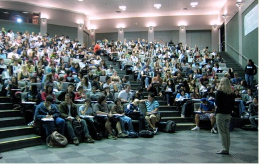
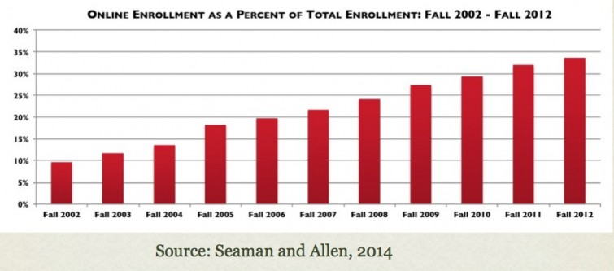

Chapter 1
Teaching in a Digital Age
In this chapter, I will be discussing the pressures that are mounting on post-secondary institutions to change, particularly with regard to the way they deliver one of their core activities, teaching. I will be arguing that although our institutions will need to change if they are to survive, it is important to maintain and strengthen their core values. Thus it’s not a question of throwing out everything and starting afresh, but managing that change in such a way that the core values are protected.
In particular, this chapter covers the following topics:
Also in this chapter you will find the following activities:
In a digital age, we are surrounded, indeed, immersed, in technology. Furthermore, the rate of technological change shows no sign of slowing down. Technology is leading to massive changes in the economy, in the way we communicate and relate to each other, and increasingly in the way we learn. Yet our educational institutions were built largely for another age, based around an industrial rather than a digital era.
Thus teachers and instructors are faced with a massive challenge of change. How can we ensure that we are developing the kinds of graduates from our courses and programs that are fit for an increasingly volatile, uncertain, complex and ambiguous future? What should we continue to protect in our teaching methods (and institutions), and what needs to change?
To answer these questions, this book:
In this chapter I set out some of the main developments that are forcing a reconsideration of how we should be teaching.
Of the many challenges that institutions face, one is in essence a good one, and that is increased demand, particularly for post-secondary education. Figure 1.1.2 below represents the extent to which knowledge has become an increasingly important element of economic development, and above all in job creation.

The figure is symbolic rather than literal. The pale blue circles representing the whole work force in each employment sector may be larger or smaller, depending on the country, as too will be the proportion of knowledge workers in that industry, but at least in developed countries and also increasingly in economically emerging countries, the knowledge component is growing rapidly: more brains and less brawn are required (see OECD, 2013a). Economically, competitive advantage goes increasingly to those companies and industries that can leverage gains in knowledge (OECD, 2013b). Indeed, knowledge workers often create their own jobs, starting up companies to provide new services or products that did not exist before they graduated.
From a teaching perspective the biggest impact is likely to be on technical and vocational instructors and students, where the knowledge component of formerly mainly manual skills is expanding rapidly. Particularly in the trades areas, plumbers, welders, electricians, car mechanics and other trade-related workers are needing to be problem-solvers, IT specialists and increasingly self-employed business people, as well as having the manual skills associated with their profession.
Another consequence of the growth in knowledge-based work is the need for more people with higher levels of education than previously, resulting in a demand for more highly qualified workers at a university level. However, even at a university level, the type of knowledge and skills required of graduates is also changing.
There are certain common features of knowledge-based workers in a digital age:
It can be seen then that it is difficult to predict with any accuracy what many graduates will actually be doing ten or so years after graduation, except in very broad terms. Even in areas where there are clear professional tracks, such as medicine, nursing or engineering, the knowledge base and even the working conditions are likely to undergo rapid change and transformation over that period of time. However, we shall see in Section 1.2 that it is possible to predict many of the skills they will need to survive and prosper in such an environment.
This is good news for the higher education sector overall as the knowledge and skill levels needed in the workforce increases. It has resulted in a major expansion of higher education to meet the demand for knowledge-based work and higher levels of skill. The province of Ontario in Canada for instance already has a participation rate of almost 60 per cent of high school leavers going on to some form of post-secondary education, and the provincial government wants to increase that participation rate to 70 per cent, partly to offset the loss of more traditional manufacturing jobs in the province (Ontario, 2012). This means more students for universities and colleges.

OECD (2013a) OECD Skills Outlook: First Results from the Survey of Adult Skills Paris: OECD
OECD (2013b) Competition Policy and Knowledge-Based Capital Paris: OECD
Ontario (2012) Strengthening Ontario’s Centres of Creativity, Innovation and Knowledge Toronto ON: Ministry of Training, Colleges and Universities
Knowledge involves two strongly inter-linked but different components: content and skills. Content includes facts, ideas, principles, evidence, and descriptions of processes or procedures. Most instructors, at least in universities, are well trained in content and have a deep understanding of the subject areas in which they are teaching. Expertise in skills development though is another matter. The issue here is not so much that instructors do not help students develop skills – they do – but whether these intellectual skills match the needs of knowledge-based workers, and whether enough emphasis is given to skills development within the curriculum.
The skills required in a knowledge society include the following (adapted from Conference Board of Canada, 2014):
We know a lot from research about skills and skill development (see, for instance, Fischer, 1980, Fallow and Steven, 2000):
The teaching implications of the distinction between content and skills will be discussed in more detail in Chapter 2. The key point here is that content and skills are tightly related and as much attention needs to be given to skills development as to content acquisition to ensure that learners graduate with the necessary knowledge and skills for a digital age.
The Conference Board of Canada (2014) Employability Skills 2000+ Ottawa ON: Conference Board of Canada
Fallow, S. and Stevens, C. (2000) Integrating Key Skills in Higher Education: Employability, Transferable Skills and Learning for Life London UK/Sterling VA: Kogan Page/Stylus
Fischer, K.W. (1980) A Theory of Cognitive Development: The Control and Construction of Hierarchies of Skills Psychological Review, Vol. 84, No. 6
However, there is a real danger in tying university, college and schools programs too closely to immediate labour market needs. Labour market demand can shift very rapidly, and in particular, in a knowledge-based society, it is impossible to judge what kinds of work, business or trades will emerge in the future. For instance, who would have predicted 20 years ago that one of the largest companies in the world in terms of stock market valuation would emerge from finding ways to rank the hottest girls on campus (which is how Facebook started)?
The focus on the skills needed in a digital age raises questions about the purpose of universities in particular, but also schools and two year community colleges to some extent. Is their purpose to provide ready-skilled employees for the work-force? Certainly the rapid expansion in higher education is largely driven by government, employers and parents wanting a work-force that is employable, competitive and if possible affluent. Indeed, preparing professional workers has always been one role for universities, which have a long tradition of training for the church, law and much later, government administration.
Secondly, focusing on the skills required for a knowledge-based society (often referred to as 21st century skills) merely reinforces the kind of learning, especially the development of intellectual skills, for which universities have taken great pride in the past. Indeed in this kind of labour market, it is critical to serve the learning needs of the individual rather than specific companies or employment sectors. To survive in the current labour market, learners need to be flexible and adaptable, and should be able to work just as much for themselves as for corporations that increasingly have a very short operational life. The challenge then is not re-purposing education, but making sure it meets that purpose more effectively.

In the age of constant connectedness and social media, it’s time for the monolithic, millennium-old, ivy-covered walls to undergo a phase change into something much lighter, more permeable, and fluid.
Anya Kamenetz, 2010
Although this book is aimed at teachers and instructors in schools and colleges as well as universities, I want to look particularly at how the digital age is impacting on universities. There is a widely held belief – even among those who have benefited from fine degrees at prestigious universities – that universities are out of touch, that academic freedom is really about protecting professors in a comfortable career that doesn’t require them to change, and that the entire organization of the academy is better left to its medieval past: in other words, universities are an artifact of the past and something new needs to replace them.
Nevertheless, there are very good reasons why universities have been around for more than 800 years, and are likely to remain relevant well into the future. Universities are deliberately designed to resist external pressure. They have seen kings and popes, governments and business corporations, come and go, without any of these external forces fundamentally changing the nature of the institution. Universities pride themselves on their independence, their freedom, and their contribution to society. So let’s start by looking, very briefly, at these core values, because any change that really threatens these core values is likely to be strongly resisted from professors and instructors within the institution.
Universities are fundamentally about the creation, evaluation, maintenance and dissemination of knowledge. This role in society is even more important today than in the past. For universities to perform that role adequately, though, certain conditions are necessary. First they need a good deal of autonomy. The potential value of new knowledge in particular is difficult to predict in advance. Universities provide society with a safe way of gambling on the future, by encouraging innovative research and development that may have no immediate apparent short-term benefits, or may lead to nowhere, without incurring major commercial or social loss. Another critical role is the ability to challenge the assumptions or positions of powerful agencies outside the university, such as government or industry, when these seem to be in conflict with evidence or ethical principles or the general good of society.
Perhaps even more importantly, there are certain principles that distinguish academic knowledge from everyday knowledge, such as rules of logic and reasoning, the ability to move between the abstract and the concrete, ideas supported by empirical evidence or external validation (see for instance, Laurillard, 2001). We expect our universities to operate at a higher level of thinking than we as individuals or corporations can do in our everyday lives.
One of the core values that has helped to sustain universities is academic freedom. Academics who ask awkward questions, who challenge the status quo, who provide evidence that contradicts statements made by government or corporations, are protected from dismissal or punishment within the institution for expressing such views. Academic freedom is an essential condition within a free society. However, it also means that academics are free to choose what they study, and more importantly for this book, how best to communicate that knowledge. University teaching then is bound up with this notion of academic freedom and autonomy, even though some of the conditions that protect that autonomy, such as tenure or a job for life, are increasingly under pressure.
I make this point for one reason and one reason alone. If universities are to change to meet changing external pressures, this change must come from within the organization, and in particular from the professors and instructors themselves. It is the faculty that must see the need for change, and be willing to make those changes themselves. If government or society as a whole tries to enforce changes from outside, especially in a way that challenges the core values of a university such as academic freedom, there is a grave risk that the very thing that makes universities a unique and valuable component of society will be destroyed, thus making them less rather than more valuable to society as a whole. However, this book will provide many reasons why it is also in the best interests of not only learners but instructors themselves to make changes, in terms of managing workload and attracting extra resources to support teaching.
Schools and two-year colleges are in a somewhat different position. It is easier (although not that easy) to impose change from above or through forces from outside the institution, such as government. However, as the literature on change management clearly indicates (see, for instance, Weiner, 2009), change occurs more consistently and more deeply when those undergoing change understand the need for it and have a desire to change. Thus in many ways, schools, two year colleges and universities face the same challenge: how to change while preserving the integrity of the institution and what it stands for.
Kamenetz, A. (2010) DIY U: Edupunks, Edupreneurs, and the Coming Transformation of Higher Education White River Junction VT: Chelsea Green
Laurillard, D. (2001) Rethinking University Teaching: A Conversational Framework for the Effective Use of Learning Technologies New York/London: Routledge
Weiner, B. (2009) A theory of organizational readiness for change Implementation Science, Vol. 4, No. 67

Governments in different provinces, states and countries have varied in their response to the need for more highly educated people. Some (as in Canada) have increased state funding to post-secondary education institutions to an extent that matches or even exceeds the increase in student numbers. Others (particularly in the USA, Australia and England and Wales) have relied mainly on steep cuts in direct state funding for operating budgets, combined with massive increases in tuition fees.
Whatever the government strategy, in every university and college I visit, I am told instructors have more students to teach, class sizes are getting larger, and as a result, more and more classes are just lectures with little interaction. Indeed, statistics support this argument. According to Usher (2013), the overall full-time faculty:full time student ratio in Canadian universities increased from 1:18 in 1995 to 1:22 by 2011, despite a 40 per cent increase in per student funding (after inflation). In fact, a 1:22 ratio means much larger class sizes, because in universities full-time faculty spend only a notional 40 per cent of their time on teaching, and students may take up to 10 different courses a year. The fact is that especially in first and second year classes, class sizes are extremely high. For instance, one Introductory Psychology class in a mid-sized Canadian university has one full-time professor responsible for over 3,000 students.
Tuition fees though are very visible, so many institutions or government jurisdictions have tried to control increases in tuition fees, despite cuts in operating grants, resulting in increased full time instructor:student ratios. Also, as a result of higher tuition fees and increased student debt to finance university and college education, students and parents are becoming more demanding, more like customers than scholars in an academic community. Poor teaching in particular is both visible and less and less acceptable to students paying high tuition fees.
The general complaint from faculty is that government or the institutional administration has not increased funding for faculty in proportion to the increase in student numbers. In fact, the situation is much more complicated than that. Most institutions that have expanded in terms of student numbers have handled the expansion through a number of strategies:
All of these strategies tend to have a negative impact on quality, if the methods of teaching otherwise remain unchanged.
Contract instructors are cheaper to employ than full time professors but they do not usually have the same roles such as choice of curriculum and reading materials as tenured faculty, and although often well qualified academically, the relatively temporary nature of their employment means that their experience and knowledge of students are lost when their contracts end. However, of all the strategies, this is likely to have the least negative impact on quality. Unfortunately though it is also the most expensive for institutions.
Teaching assistants may be no more than a couple of years ahead in their studies than the students they are teaching, they are often poorly trained or supervised with regard to teaching, and sometimes, if they are foreign students (as is often the case), their English language skills are poor, making them sometimes difficult to understand. They tend to be used to instruct parallel sections of the same course, so that students studying the same course may have widely different levels of instruction. Employing and paying teaching assistants can be directly linked to the way that post-graduate research is being funded by government agencies.
The increase in class size has tended to result in much more time being devoted to lectures and less time to small group work. Lectures are in fact a very economical way of increasing class size (provided that the lecture halls are large enough to accommodate the extra students). The marginal cost of adding an extra student to a lecture is small, since all students are receiving the same instruction. However, as numbers increase, faculty resort to more quantitative and less flexible forms of assessment, such as multiple-choice questions and automated assessment. Perhaps more importantly, student interaction with faculty decreases rapidly as numbers increase, and the nature of the interaction tends to flow between the instructor and an individual students rather than between students interacting as a group. Research (Bligh, 2000) has shown that in lectures with 100 or more students, less than ten students will ask questions or provide comments over the course of a semester. The result is that lectures tend to focus more heavily on the transmission of information as class size increases, rather than on exploration, clarification or discussion (see Chapter 4, Section 2 for a more detailed analysis of the effectiveness of lectures).
Increasing faculty teaching load (more courses to be taught) is the least common of the four strategies, partly because of faculty resistance, sometimes manifesting itself in collective agreement negotiations. Where increased faculty teaching load does occur, quality again is likely to suffer, as faculty put in less preparation time per class and less time for office hours, and resort to quicker and easier methods of assessment. This inevitably results in larger classes if full-time faculty are teaching less but doing more research. However, increased research funding results in more post-graduate students, who can supplement their income as teaching assistants. As a result there has been a major expansion in the use of teaching assistants for delivering lectures. However, in many Canadian universities, full-time faculty teaching load has been going down (Usher, 2013), leading to even larger class sizes per full-time instructor.
In other employment sectors, increased demand does not necessarily result in increased cost if that sector can be more productive. Thus government is increasingly looking for ways to make higher education institutions more productive: more and better students for the same cost or less (see Ontario, 2012). Up to now, this pressure has been met by institutions over a fairly long period of time by gradually increasing class size, and using lower cost labour, such as teaching assistants, but there becomes a point fairly quickly where quality suffers unless changes are made to the underlying processes, by which I mean the way that teaching is designed and delivered.
Another side effect of this gradual increase in class size without changes in teaching methods is that faculty and instructors end up having to work harder. In essence they are processing more students, and without changing the ways they do things, this inevitably results in more work. Faculty usually react negatively to the concept of productivity, seeing it as industrializing the educational process, but before rejecting the concept it is worth considering the idea of getting better results without working as hard but more smartly. Could we change teaching to make it more productive so that both students and instructors benefit?
Bligh, D. (2000) What’s the Use of Lectures? San Francisco: Jossey-Bass
Ontario (2012) Strengthening Ontario’s Centres of Creativity, Innovation and Knowledge Toronto ON: Provincial Government of Ontario
Usher, A. (2013) Financing Canadian Universities: A Self-Inflicted Wound (Part 5) Higher Education Strategy Associates, September 13
Probably nothing has changed more in higher education over the last 50 years than the students themselves. In ‘the good old days’, when less than a third of students from high schools went on to higher education, most came from families who themselves had been to university or college. They usually came from wealthy or at least financially secure backgrounds. Universities in particular could be highly selective, taking students with the best academic records, and thus those most likely to succeed. Class sizes were smaller and faculty had more time to teach and less pressure to do research. Expertise in teaching, while important, was not as essential then as now; good students were in an environment where they were likely to succeed, even if the prof was not the best lecturer in the world. This ‘traditional’ model still holds true for most elite private universities such as Harvard, MIT, Stanford, Oxford and Cambridge, and for a number of smaller liberal arts colleges. But for the majority of publicly funded universities and two year community colleges in most developed countries, this is no longer the case (if it ever was).
In Canada, with 28 per cent of high school graduates going on to university and another 20 per cent going to two year community colleges, the student base has become much more diverse (AUCC, 2011). As state jurisdictions push institutions to participation rates of around 70 per cent going on to some form of post-secondary education (Ontario, 2011), institutions must reach out to previously underserved groups, such as ethnic minorities (particularly Afro-American and Latinos in the USA), new immigrants (in most developed countries), aboriginal students in Canada, and students with English as a second language. Governments are also pushing universities to take more international students, who can be charged full tuition fees or more, which in turn adds to the cultural and language mix. In other words, post-secondary institutions are expected to represent the same kind of socio-economic and cultural diversity as in society at large, rather than being institutions reserved for an elite minority.
We shall also see that in many developed countries, university and college students are older than they used to be and are no longer full-time students dedicated only to lots of study and some fun (or vice versa). The increasing cost of tuition fees and living expenses forces many students now to take part-time work, which inevitably conflicts with regular classroom schedules, even if the students are formally classified as full-time students. As a result students are taking longer to graduate. In the USA, the average completion time for a four year bachelors degree is now seven years (Lumina Foundation, 2014).
The Council of Ontario Universities (2012) has noted that students NOT coming direct from high school now constitute 24% of all new admissions, and enrolments from this sector are increasing faster than those from students coming direct from high schools. Perhaps more significantly, many graduates are returning later in their careers to take further courses or programs, in order to keep up in their ever-changing knowledge domain. Many of these students are working full-time, have families and are fitting their studies around their other commitments.
Yet it is economically critical to encourage and support such students, who need to remain competitive in a knowledge-based society. especially as with falling birthrates and longer lives, in some jurisdictions lifelong learners, students who have already graduated but are coming back for more study, will soon exceed the number of students coming directly from high school. Thus at the University of British Columbia in Canada, the mean age of all its graduates students is now 31, and more than one third of all students are over 24 years old. There is also an increase in students transferring from two year colleges to universities – and vice versa. For instance, in Canada, the British Columbia Institute of Technology estimates that now more than half of its new enrolments each year already have a university degree.
Another factor that makes students somewhat different today is their immersion in and facility with digital technology, and in particular social media: instant messaging, Twitter, video games, Facebook, and a whole host of applications (apps) that run on a variety of mobile devices such as iPads and mobile phones. Such students are constantly ‘on’. Most students come to university or college immersed in social media, and much of their life evolves around such media. Some commentators such as Mark Prensky (2001) argue that digital natives think and learn fundamentally differently as a result of their immersion in digital media. They expect to use social media in all other aspects of their life. Why should their learning experience be different? We shall explore this further in Chapter 8, Section 2.
Many older faculty still pine for the good old days when they were students. Even in the 1960s, when the Robbins’ Commission recommended an expansion of universities in Britain, the Vice-Chancellors of the existing universities moaned ‘More means worse.’ However, for public universities, the Socratic ideal of a professor sharing their knowledge with a small group of devoted students under the linden tree no longer exists, except perhaps at graduate level, and is unlikely ever to return to public post-secondary institutions (except perhaps in Britain, where the Cameron government seems to be dialling back the clock to the 1950s). The massification of higher education has, to the alarm of traditionalists, opened up the academy to the great unwashed. However, we have seen that this is being done as much for economic reasons as for social mobility.
The implications of these changes in the student body for university and college teaching are profound. At one time, German math professors used to pride themselves that only five to ten per cent of their students would succeed in their exams. The difficulty level was so high that only the very best passed. A tiny completion rate showed how rigorous their teaching was. It was the students’ responsibility, not the professors’, to reach the level required. That may still be the goal for top level research students, but we have seen that today universities and colleges have a somewhat different purpose, and that is to ensure, as far as possible, that as many students as possible leave university appropriately qualified for life in a knowledge-based society. We can’t afford to throw away the lives of 95 per cent of students, either ethically or economically. In any case, governments are increasingly using completion rates and degrees awarded as key performance indicators that influence funding.
It is a major challenge for institutions and teachers to enable as many students as possible to succeed, given the wide diversity of the student body. More focus on teaching methods that lead to student success, more individualization of learning, and more flexible delivery are all needed to meet the challenge of an increasingly diverse student body. These developments put much more responsibility on the shoulders of teachers and instructors (as well as students), and require a much higher level of skill in teaching.
Fortunately, over the last 100 years there has been a great deal of research into how people learn, and a lot of research into teaching methods that lead to student success. Unfortunately, that research is not known or applied by the vast majority of university and college instructors, who still rely mainly on teaching methods that were perhaps appropriate when there were small classes and elite students, but are no longer appropriate today (see, for instance, Christensen Hughes and Mighty, 2010). Thus a different approach to teaching, and a better use of technology to help instructors increase their effectiveness across a diverse student body, are now needed.
AUCC (2011) Trends in Higher Education: Volume 1-Enrolment Ottawa ON: Association of Universities and Colleges of Canada
Christensen Hughes, J. and Mighty, J. (2010) Taking Stock: Research on Teaching and Learning in Higher Education Montreal and Kingston: McGill-Queen’s University Press
Council of Ontario Universities (2012) Increased numbers of students heading to Ontario universities Toronto ON: COU
Lumina Foundation (2014) A Stronger Nation through Higher Education Indianapolis IN: The Lumina Foundation for Education, Inc.
Prensky, M. (2001) ‘Digital natives, Digital Immigrants’ On the Horizon Vol. 9, No. 5
Robbins, L. (1963) Higher Education Report London: Committee on Higher Education, HMSO
We shall see in Chapter 6, Section 2 that technology has always played an important role in teaching from time immemorial, but until recently, it has remained more on the periphery of education. Technology has been used mainly to support regular classroom teaching, or operated in the form of distance education, for a minority of students or in specialized departments (often in continuing education or extension). However, in the last ten to fifteen years, technology has been increasingly influencing the core teaching activities of even universities. Some of the ways technology is moving from the periphery to the centre can be seen from the following trends.
Credit-based online learning is now becoming a major and central activity of most academic departments in universities, colleges and to some extent even in school/k-12 education. Enrolments in fully online courses (i.e. distance education courses) now constitute between a quarter and a third of all post-secondary enrolments in the USA (Allen and Seaman, 2014). Online learning enrolments have been increasing by between 10-20 per cent per annum for the last 15 years or so in North America, compared with an increase in campus-based enrolments of around 2-3 per cent per annum. There are now at least seven million students in the USA taking at least one fully online course, with almost one million online course enrolments in just the California Community College System (Johnson and Mejia, 2014). Fully online learning then is now a key component of many school and post-secondary education systems.

As more instructors have become involved in online learning, they have realised that much that has traditionally been done in class can be done equally well or better online (a theme that will be explored more in Chapter 9). As a result, instructors have been gradually introducing more online study elements into their classroom teaching. So learning management systems may be used to store lecture notes in the form of slides or PDFs, links to online readings may be provided, or online forums for discussion may be established. Thus online learning is gradually blended with face-to-face teaching, but without changing the basic classroom teaching model. Here online learning is being used as a supplement to traditional teaching. Although there is no standard or commonly agreed definitions in this area, I will use the term ‘blended learning’ for this use of technology.
More recently, though, lecture capture has resulted in instructors realising that if the lecture is recorded, students could view this in their own time, and then the classroom time could be used for more interactive sessions. This model has become known as the ‘flipped classroom’.
Some institutions are now developing plans to move a substantial part of their teaching into more blended or flexible modes. For instance the University of Ottawa is planning to have at least 25 per cent of its courses blended or hybrid within five years (University of Ottawa, 2013). The University of British Columbia is planning to redesign most of its first and second year large lecture classes into hybrid classes (Farrar, 2014).
The implications of both fully online and blended learning will be discussed more fully in Chapter 9.
Another increasingly important development linked to online learning is the move to more open education. Over the last 10 years there have been developments in open learning that are beginning to impact directly on conventional institutions. The most immediate is open textbooks – such as what you are reading now. Open textbooks are digital textbooks that can be downloaded in a digital format by students (or instructors) for free, thus saving students considerable money on textbooks. For instance, in Canada, the three provinces of British Columbia, Alberta, and Saskatchewan have agreed to collaborate on the production and distribution of peer-reviewed open textbooks for the 40 high-enrolment subject areas in their university and community college programs.
Open educational resources (OER) are another recent development in open education. These are digital educational materials freely available over the Internet that can be downloaded by instructors (or students) without charge, and if necessary adapted or amended, under a Creative Commons license that provides protections for the creators of the material. Probably the best known source of OER is the Massachusetts Institute of Technology OpenCourseWare project. With individual professors’ permission, MIT has made available for free downloading over the Internet video lectures recorded with lecture capture as well as supporting materials such as slides.
The implications of developments in open learning will also be discussed in Chapter 10.
One of the main developments in online learning has been the rapid growth of Massive Open Online Courses (MOOCs). In 2008, the University of Manitoba in Canada offered the first MOOC with just over 2,000 enrolments, which linked webinar presentations and/or blog posts by experts to participants’ blogs and tweets. The courses were open to anyone and had no formal assessment. In 2012, two Stanford University professors launched a lecture-capture based MOOC on artificial intelligence, attracting more than 100,000 students, and since then MOOCs have expanded rapidly around the world.
Although the format of MOOCs can vary, in general they have the following characteristics:
However, MOOCs are merely the latest example of the rapid evolution of technology, the over-enthusiasm of early adopters, and the need for careful analysis of the strengths and weaknesses of new technologies for teaching. At the time of writing, the future of MOOCs is difficult to forecast. They will certainly evolve over time, and will probably find some kind of niche in the higher education market.
MOOCs will be discussed more fully in Chapter 5.
These rapid developments in educational technologies mean that faculty and instructors need a strong framework for assessing the value of different technologies, new or existing, and for deciding how or when these technologies make sense for them and their students to use. Blended and online learning, social media and open learning are all developments that are critical for effective teaching in a digital age.
Allen, I. and Seaman, J. (2014) Grade Change: Tracking Online Learning in the United States Wellesley MA: Babson College/Sloan Foundation
Farrar, D. (2014) Flexible Learning: September 2014 Update Flexible Learning, University of British Columbia
Johnson, H. and Mejia, M. (2014) Online learning and student outcomes in California’s community colleges San Francisco CA: Public Policy Institute of California
University of Ottawa (2013) Report of the e-Learning Working Group Ottawa ON: University of Ottawa
Instructors in both universities and colleges now face the following challenges:
However, in general, teachers and instructors in post-secondary education have little or no training in teaching, pedagogy or the research on learning. Even many school teachers lack adequate training to deal with rapidly changing technologies. We wouldn’t expect pilots to fly a modern jet without any training, yet that is exactly what we are expecting of our teachers and instructors.
This book then aims to provide a framework for making decisions about how to teach, and how best to use technology, in ways that are true to the core values of universities, colleges, and schools, while building on the large amount of research into learning and teaching, and into the use of technology for teaching, that has been done over the last 50 years or so.
The next chapter deals with the most important question of all: how do you want to teach in a digital age?
Teaching in a Digital Age: Guidelines for designing teaching and learning by Dr. Tony Bates (CC BY-NC).
Photos: reproduced from the original open textbook (each figure is credited in its caption).
Design: HTML template based on work by HTML5 UP.
{kind=link}
{kind=link}